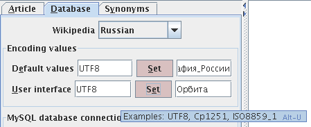

Table of Contents
Weekends were made for programming. /Karl Lehenbauer/
The program searches synonyms (and related words) in a set of texts of special structure (like Wikipedia and other wiki-resources).
Synarcher can work in Linux, Windows. It was tested in Mandriva, Debian, Windows XP.
Running the Synarcher requires:
Local installation of Wikipedia. It requires MySQL, Apache, MediaWiki, and files with Wikipedia data.
Java Runtime Environment (JRE) with version number of at least 1.3.0 You can get the latest JRE from http://java.sun.com/javase/downloads/index.jsp
Download files from https://sourceforge.net/projects/synarcher
Install Apache, MySQL & PHP. See Linux, Apache, MySQL & PHP (LAMP) Setup Guide, or here, or here. There are the guide for Windows users and one more guide. See Step by step setup of a MediaWiki on a Windows XP computer.
Download
php-5.2.0-Win32.zipor later from www.php.netInstall it, for example, to folder
c:\phpRename the file
php-cgi.exetophp.exeRename the file
C:\php\php.ini-recommendedtoC:\php\php.iniEdit the file
php.ini(change the doc_root to match your httpd.conf DocumentRoot directory (Apache)):doc_root = C:\inetpub
memory_limit = 64M
extension_dir = "C:\php\ext"
extension = php_mysql.dllAdd
php.exeto %PATH%, (see more about %PATH% and environment variables in Windows XP). Check PHP installation (run the command):php -vYou should see something like:
PHP 5.2.0 (cli) (built: May 4 2006 10:35:22)Install Apache HTTP Server (download
apache_2.2.4-win32-x86-no_ssl.msior later from apache.org).Edit Apache configuration file
C:\Program Files\Apache Group\Apache2\conf\httpd.conf. Add the lines (let's MediaWiki will be installed toC:/inetpub/mediawiki.ru/):Listen NNN.NNN.NN.NN:80 # your IP should be here
Listen localhost:80
ServerName YOUR_COMPUTER_NAME.YOUR_DOMAIN:80
DocumentRoot "C:/Inetpub" # The place where will be located your data, e.g. mediawiki.ru
<Directory "C:/inetpub">
...
LoadModule php5_module "c:/php/php5apache2_2.dll"
AddType application/x-httpd-php .php
PHPIniDir "C:/php"Download MySQL 5.0.27 (or later) and install it.
You can optimize MySQL to speed-up loading of Wikipedia data to MySQL.
Run MySQL Server Instance Config Wizard™, select custom configuration, select option Dedicated MySQL Server Machine, setup it.
Open in text editor MySQL configuration file
C:\Program Files\MySQL\MySQL Server 5.1\my.ini. Replace some lines by list of setting presented below “MySQL optimization”Restart MySQL service to apply changes
NET STOP MySQL # or: mysqld_safe --user=mysql --log &
NET START MySQLAfter uploading Wikipedia database to MySQL (see steps below), you can return MySQL to normal mode: run MySQL Server Instance Config Wizard™, select custom configuration, select option Developer Machine, setup it.
Install MediaWiki (download from www.mediawiki.org).
See below “Example of MediaWiki parameters” (in Linux section) to setup MediaWiki.
Then open in your browser: http://localhost/ruwikipedia/. MediaWiki is installed, but MySQL database is empty at this moment.
Download Wikipedia dumps from Wikimedia Foundation project: http://download.wikimedia.org/ (select "Database backup dumps"). See more about Data_dumps. Synarcher works with four MySQL tables: page, pagelinks, categorylinks, and interwiki. In order to run Synarcher it is enough to download four files, e.g.
ruwiki-20070304-pages-articles.xml.bz2,ruwiki-20070304-pagelinks.sql.gz,ruwiki-20070304-categorylinks.sql.gz, andruwiki-20070304-interwiki.sql.gz(Russian Wikipedia).Extract
ruwiki-20060718-pages-articles.xml.bz2toC:\all\inetpub\mediawiki.ru, run two commands:php maintenance/importDump.php < ruwiki-20060718-pages-articles.xmlphp maintenance/refreshLinks.phpOpen in your browser: http://localhost/ruwikipedia/. Wikipedia is installed.
Synarcher Installation.
Add the user (e.g. 'javawiki') to MySQL database. Grant privileges at database levels (e.g. 'ruwiki' database). Open MySQL command-line and run commands:
mysql>CREATE USER javawiki;mysql>GRANT SELECT ON ruwiki.* TO javawiki@'localhost';(with password; from any computer>GRANT SELECT PRIVILEGES ON ruwiki.* TO javawiki identified by '12345')mysql>FLUSH PRIVILEGES;Download
synarcher-X.X.tar.gzfrom https://sourceforge.net/projects/synarcherUnzip it to
c:\synarcherRun
c:\synarcher\synarcher.bat.Define wikipedia parameters (for Synarcher) in file
%HOMEPATH%\.wikibrowser.server.props. See appendix “~/.wikibrowser.server.props”. Some parameters are available in tab 'Database' in Synarcher.In the Synarcher program click button '?', help will be displayed in tab Article.
Linux tips:
cd /bin && ln -s /usr/local/apache2/bin/apachectl
Startup Apache
apachectl start # in Mandriva
/etc/init.d/apache2 start # in Debian
/etc/init.d/mysql start # Startup MySQL
or startup MySQL by these two commands:
su mysql
mysqld
set root password in MySQL
mysql -u root
SET PASSWORD FOR 'root'@'localhost' = PASSWORD('newpwd');
SELECT Host, User FROM mysql.user;
Let's we want install Russian Wikipedia. Let's the database name in MySQL will be ruwiki. Then run MySQL and check that the database doesn't exist yet:
$mysqlmysql$show databases;mysql$drop database ruwiki;In order to optimize MySQL, change
/etc/mysql/my.cnf, see e.g. http://forum.ev1servers.net/showthread.php?t=48880. The following parameters are recommended formy.cnf.# for computer with single CPU, 1GB of RAM
[mysqld]
connect_timeout=0
interactive_timeout=100
join_buffer_size=1M
key_buffer=64M
max_allowed_packet=16M
max_connections=500
max_connect_errors=10
myisam_sort_buffer_size=32M
read_buffer_size=2M
read_rnd_buffer_size=2M
sort_buffer_size=2M
table_cache=1024
thread_cache_size=100
thread_concurrency=2
wait_timeout=300
query_cache_size=128M
query_cache_limit=1M
query_cache_type=1
skip-innodb
innodb_data_file_path = ibdata1:10M:autoextend:max:1900MTo speedup the server I usually make sure I disable other logging, by commenting out the following line:
#log = /var/log/mysql.log
MySQL allows you to log slow queries. Uncomment the following line:
log-slow-queries = /var/log/mysql/mysql-slow.log
Restart MySQL to apply new settings:
$/etc/init.d/mysql restartInstall MediaWiki (download from www.mediawiki.org). It is used here to provide access to a local Wikipedia (to be uploaded to your MySQL database). Read Hacking MediaWiki, MediaWiki User's Guide: Installation and Database layout.
MediaWiki installation in Debian:
Install PHP.
$apt-get install php5-mysql php5-cli/etc/php5/apache2/php.ini>memory_limit = 64M# some empirical value$/etc/init.d/mysql restartInstall MediaWiki (stable version) by apt-get
$apt-get install mediawiki mediawiki-extensions# Folders/etc/mediawiki1.9and/var/lib/mediawiki1.9are created.Install latest MediaWiki version (download from MediaWiki site), e.g. file
mediawiki-1.10.0.tar.gz.$cp mediawiki-1.10.0.tar.gz /var/lib$cd /var/lib$tar -xzvf mediawiki-1.10.0.tar.gz$mv mediawiki-1.10.0 mediawiki-1.10.0.ruAdd to
/etc/mediawiki1.9/apache.confthe lines (this file will appear after execution of the command apt-get install mediawiki):############# # RUWIKIPEDIA ############# Alias /ruwikipedia /var/lib/mediawiki-1.10.0.ru <Directory /ruwikipedia/> Options +FollowSymLinks AllowOverride All order allow,deny allow from all </Directory> # some directories must be protected <Directory /ruwikipedia/config> Options -FollowSymLinks AllowOverride None </Directory> <Directory /ruwikipedia/upload> Options -FollowSymLinks AllowOverride None </Directory> ############# # ENWIKIPEDIA ############# Alias /enwikipedia /var/lib/mediawiki-1.6.5.en <Directory /enwikipedia/> Options +FollowSymLinks AllowOverride All order allow,deny allow from all </Directory> # some directories must be protected <Directory /enwikipedia/config> Options -FollowSymLinks AllowOverride None </Directory> <Directory /enwikipedia/upload> Options -FollowSymLinks AllowOverride None </Directory>Restart apache, and open local wikipedia site in your browser
$/etc/apache2/conf.d/mediawiki1.9.conf -> /etc/mediawiki1.9/apache.conf # check: this link should be created automatically afterapt-get install mediawiki$cd /var/lib/mediawiki-1.10.0.ru/var/lib/mediawiki-1.10.0.ru$chmod a+wx -R /var/lib/mediawiki-1.10.0.ru/config$mozilla-firefox http://localhost/ruwikipedia/config
Example of MediaWiki parameters
Site name
ruwikipediaLanguage
ru - РусскийMemcached servers (optional)
localhost:11211(first install: apt-get install memcached)MySQL server
localhostDatabase name
ruwikiDatabase table prefix
Database charset
Backwards-compatible UTF-8(not Experimental MySQL 4.1/5.0 UTF-8)DB root password
newpwd
Move LocalSettings.php with your settings to parent folder.
$cd /var/lib/mediawiki-1.10.0.ru/config/var/lib/mediawiki-1.10.0.ru/config$mv LocalSettings.php ..
Download Wikipedia dumps from Wikimedia Foundation project: http://download.wikimedia.org/ (select "Database backup dumps"). See more about Data_dumps. Synarcher works with four MySQL tables: page, pagelinks, categorylinks, and interwiki. In order to run Synarcher it is enough to download four files, e.g.
ruwiki-20070304-pages-articles.xml.bz2,ruwiki-20070304-pagelinks.sql.gz,ruwiki-20070304-categorylinks.sql.gz, andruwiki-20070304-interwiki.sql.gz(Russian Wikipedia).Importing tool mwdumper (version 2006-Feb-01) failed to upload Russian Wikipedia, so I have used
maintenance/importDump.phpscript (see example "Slow upload dump..." below). Failed command: java -server -jar mwdumper.jar --format=sql:1.5 ruwiki-20060204-pages-articles.xml.bz2 | mysql -u root -p ruwikiVariant 1. Slow upload dump file to MySQL, e.g. commands for Russian Wikipedia:
$cd /var/lib/mediawiki-1.10.0.ru//var/lib/mediawiki-1.10.0.ru$bzip2 -dc ruwiki-20060426-pages-articles.xml.bz2 | php maintenance/importDump.php# The table page will be created./var/lib/mediawiki-1.10.0.ru$php maintenance/refreshLinks.php# See Meta's notes on rebuilding link tables # The tables pagelinks and categorylinks will be created. # If this command failes, chech that you have enough free disk space.Variant 2. Fast upload dump file to MySQL (Russian Wikipedia). Download Xml2sql.
$cd /var/lib/mediawiki-1.10.0.ru//var/lib/mediawiki-1.10.0.ru$bzip2 -d ruwiki-20070202-pages-articles.xml.bz2/var/lib/mediawiki-1.10.0.ru$xml2sql -m ruwiki-20070202-pages-articles.xml# it generates three files:page.sql,revision.sqlandtext.sql/var/lib/mediawiki-1.10.0.ru$mysql -u root -p ruwikimysql$SOURCE /temp/page.sql;SOURCE /temp/text.sql;SOURCE /temp/revision.sql;# I do not recommend hereSOURCE pagelinks.sql;SOURCE categorylinks.sql;see description belowIf there is the error (due to
revision.sql): "ERROR 1136 (21S01): Column count doesn't match value count at row 1", then try the following commands (see MediaWiki/Talk:Revision_table):mysql$ALTER TABLE revision DROP COLUMN rev_len, DROP COLUMN rev_parent_id;# remove two fieldsmysql$SOURCE /temp/revision.sqlmysql$ALTER TABLE revision ADD COLUMN rev_len INT(10) UNSIGNED DEFAULT NULL AFTER rev_deleted, ADD COLUMN rev_parent_id INT(10) UNSIGNED DEFAULT NULL AFTER rev_len;#add two fields backTables pagelinks and categorylinks require special attention (when number of articles is more than 200'000), since after the command SOURCE pagelinks.sql MySQL loads the file (several hours), then starts building of keys (English WP requires more than a week, a SHOW PROCESSLIST shows "Repair with keycache"). The solution is to disable keys, load data, enable keys, then start isamchk in order to build index. Repeat it for
categorylinks.mysql$ALTER TABLE pagelinks DISABLE KEYS;mysql$SOURCE /temp/ruwiki-20070202-pagelinks.sqlmysql$ALTER TABLE pagelinks ENABLE KEYS;$myisamchk --key_buffer_size=256M --sort_buffer_size=256M \# if computer have 1 GB of RAM, else correct values--read_buffer_size=1M --write_buffer_size=1M \--sort-recover -i /var/lib/mysql/ruwiki/pagelinks.MYIYou can check results of uploading files to MySQL, e.g. commands for Russian Wikipedia in MySQL shell are:
$mysql -u root -pmysql$use ruwiki;mysql$SELECT count(*) FROM page;# check that you really uploaded pages, # it is about 150'000 pages for Russian Wikipedia, 2'940'000 for English Wikipediamysql$SELECT count(*) FROM pagelinks;# about 2'110'000 in Russian Wikipediamysql$SELECT count(*) FROM categorylinks;# about 285'000 in Russian WikipediaCheck that local Wikipedia works. Open in your browser: http://localhost/ruwikipedia
Download
synarcher-X.X.tar.gzfrom https://sourceforge.net/projects/synarcher$gzip -zxvf synarcher-X.X.tar.gz$cd synarcher-X.X$java -jar TGWikiBrowser/dist/TGWikiBrowser.jar# The file/home/user_name/.wikibrowser.server.propswill be created$java -Xms128m -Xmx128m -Xmn16m -XX:+DisableExplicitGC -verbose:gc -jar TGWikiBrowser/dist/TGWikiBrowser.jar# You can experiment with Xms, Xmx and Xmn Java parameters, in order to speed up the programDefine wikipedia parameters in file
/home/user_name/.wikibrowser.server.props. See appendix “~/.wikibrowser.server.props”.In the Synarcher program click button '?', help will be displayed in tab Article.
Add the user (e.g. 'javawiki') to MySQL database. Grant privileges at database levels (e.g. 'ruwiki' database). Open MySQL command-line and run commands:
mysql>CREATE USER javawiki;mysql>GRANT SELECT ON ruwiki.* TO javawiki@'localhost';(with password; from any computer>GRANT SELECT PRIVILEGES ON ruwiki.* TO javawiki identified by '12345')mysql>FLUSH PRIVILEGES;
Wikipedia installation
Question: error message printed while MediaWiki installation:
Granting user permissions... A database error has occurred Query: SHOW STATUS Function: Error: 2006 MySQL server has gone away (localhost)Answer: MySQL service wasn't run properly. Run MySQL using the commands below.
$/etc/init.d/mysql start# as root$su mysql# run as user, not rootmysql$mysqldException: com.mysql.jdbc.DriverAnswer: add
mysql-connector-java-X.X.XX-bin.jarto Java CLASSPATH. This jar file is presented in the Synarcher distributive, but you can download the latest version of MySQL Connector/J.Encoding problem: Wrong characters (e.g. hieroglyphs instead of Russian letters) are produced while typing in input fields (e.g, in "Word", or in "Category blacklist parameters" fields).
Answer: It should be set Unicode locale, e.g., en_US.UTF8. See Cyrillic-HOWTO-russian or Linux in Russian. Try the following commands:
$export LANG=en_US.UTF8$export LC_ALL=en_US.UTF8$echo $LC_ALL $LANG# check that it worksHow to set up encodings for Russian Wikipedia?
1. Run program. Open tab Synonyms, write word (e.g., Орбита) to the field Word.
2. Open tab Database, set encodings UTF8 in the field "Default values". Press button Set. If you did not get valid Russian text (e.g., Страны|Века|Календарь|География_России) in the text field, then try enother encodings, e.g. Cp1251, or ISO8859_1, etc. It defines decoding of the default categories (and other text fields) from Java source code.
3. Open tab Database, set encodings UTF8 in the field "User interface". Press button Set. If you did not get valid Russian text (e.g., Орбита) in the text field, then try enother encodings, e.g. Cp1251, or ISO8859_1, etc. It defines decoding from text (e.g. in the field Word) entered by user to Java internal format (UTF8).
4. Restart the program. (Encoding values are stored in the file
~/.wikibrowser.server.props.)
Wiktionary installation
- Add the line: $wgCapitalLinks=false; at the end of file
LocalSettings.phpbefore the line '?>'
Selected Wikipedia (e.g. English, Russian or Esperanto) should be installed on your computer. In order to check connection with database press button "Get statistics" about the database.
Figure 3. The found synonyms (for the word Robot) presented as the table and graph (English Wikipedia)
Figure 5. The found synonyms in the Russian Wikipedia for the word Quaternion. Categories are blue nodes with prefix "C:" in titles. The part of title ":En:..." shows the English interwiki found in Russian Wikipedia.
Figure 6. The found synonyms in the Russian Wikipedia for the word Chechnya with categories. The Esperanto interwiki ":Eo:..." are found in Russian Wikipedia.
A. Bibliography
Krizhanovsky A. 2008. Index wiki database: design and experiments. In: FLINS'08, Corpus Linguistics'08, AIS/CAD'08, arXiv:0808.1753v1 [cs.IR]
Krizhanovsky A. 2006. Synonym search in Wikipedia: Synarcher. In: 11-th International Conference "Speech and Computer" SPECOM'2006. Russia, St. Petersburg, June 25-29, 2006, pp. 474-477, arXiv:cs.IR/0606097
Крижановский А.А. 2006. Automatic forming lists of semantically related terms based on texts rating in the corpus with hyperlinks and categories (In Russian). Автоматизированное построение списков семантически близких слов на основе рейтинга текстов в корпусе с гиперссылками и категориями. Компьютерная лингвистика и интеллектуальные технологии. Труды международной конференции «Диалог 2006». Бекасово, 31 мая - 4 июня 2006 г. 297-302 (pdf на сайте arXiv:cs.IR/0606128, Word и html версия статьи на сайте whinger.narod.ru)
B. GPL Licence
Copyright (c) 2005, 2006 Andrew Krizhanovsky /aka / at / mail.iias.spb.su/
Distributed under GNU Public License. Version 2 of the GPL or any later version. See gpl.txt
C. Third party software
This product includes BrowserLauncher, a utility for launching external browsers, copyright 1999-2001, Eric Albert (browserlauncher.sourceforge.net).
This product includes code from Sun's graph layout applet: java.sun.com/applets/jdk/1.2/demo/applets/GraphLayout/example1.html
This product includes TouchGraph WikiBrowser V 1.02. TouchGraph is copyright (c) 2002, Alexander Shapiro, TouchGraph LLC (http://www.touchgraph.com/).
This product contains MySQL Connector/J. MySQL AB's JDBC Driver for MySQL. Copyright (c) 2003 MySQL AB. See http://www.mysql.com/products/connector/j
D. ~/.wikibrowser.server.props
Define wikipedia parameters (file /home/user_name/.wikibrowser.server.props) which are read by Synarcher. In Windows this is the file C:\Documents and Settings\user_name\.wikibrowser.server.props. If a database name and user name are differ from the default values, then update fields 'db_name_en' and 'user_en'.
Set the language code: lang_code=en for English Wikipedia, or lang_code=ru for Russian.
This is the example of the file /home/user_name/.wikibrowser.server.props:
#WikiBrowser Server Properties
#Thu May 18 16:02:53 MSD 2006
db_host_ru=localhost
enc_ui=UTF8
db_name_en=ruwiki
b_log_dump2dir=1
wiki_url_ru=http\://localhost/ruwikipedia/index.php/
radius=1
pass_en=
db_name_ru=ruwiki
node_en=\u00D0\u00EE\u00E1\u00EE\u00F2
log_dir=/home/andrew/wiki
user_en=javawiki
lang_code=ru
pass_ru=
enc_java=UTF8
node_ru=\u041E\u0440\u0431\u0438\u0442\u0430
show_backlinks=0
db_host_en=localhost
user_ru=javawiki
wiki_url_en=http\://localhost/enwikipedia_linux/index.php/
E. Notes for developers
Source code has UTF8 encoding. It is important for test packages. If you are using NetBeans IDE, set NetBeans/Tools/Options/Java Sources/Default Encoding=UTF8
Set in NetBeans "Project Properties/Run/VM Options" to "-Xms128m -Xmx128m -Xmn16m -XX:+DisableExplicitGC -verbose:gc"
Add the following library files
to CLASS_PATH, you can copy files to ./kleinberg/lib directory:
mysql-connector-java-3.1.12-bin.jar# This file (or later version) is available at http://www.mysql.com/products/connector/jcommons-collections-3.1.jar# This and below files are available at http://apache.orgcommons-lang-2.1.jarcommons-logging-1.0.4jakarta-oro-2.0.8jcfd.jar